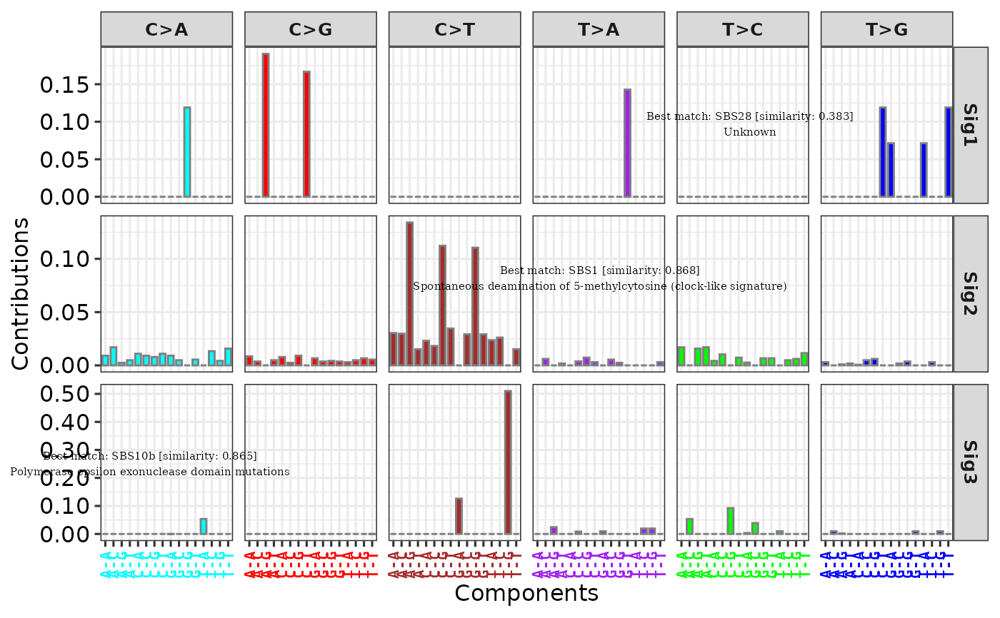

Add text labels to a ggplot object, such as the result from show_sig_profile.
add_labels(
p,
x,
y,
y_end = NULL,
n_label = NULL,
labels = NULL,
revert_order = FALSE,
font_size = 5,
font_family = "serif",
font_face = c("plain", "bold", "italic"),
...
)a ggplot.
position at x axis.
position at y axis.
end position of y axis when n_label is set.
the number of label, when this is set,
the position of labels at y axis is auto-generated
according to y and y_end.
text labels or a similarity object from get_sig_similarity.
if TRUE, revert label order.
font size.
font family.
font face.
other parameters passing to ggplot2::annotate.
a ggplot object.
# Load mutational signature
load(system.file("extdata", "toy_mutational_signature.RData",
package = "sigminer", mustWork = TRUE
))
# Show signature profile
p <- show_sig_profile(sig2, mode = "SBS")
#> Warning: `aes_string()` was deprecated in ggplot2 3.0.0.
#> ℹ Please use tidy evaluation idioms with `aes()`.
#> ℹ See also `vignette("ggplot2-in-packages")` for more information.
#> ℹ The deprecated feature was likely used in the sigminer package.
#> Please report the issue at <https://github.com/ShixiangWang/sigminer/issues>.
# Method 1
p1 <- add_labels(p,
x = 0.75, y = 0.3, y_end = 0.9, n_label = 3,
labels = paste0("text", 1:3)
)
p1
# Method 2
p2 <- add_labels(p,
x = c(0.15, 0.6, 0.75), y = c(0.3, 0.6, 0.9),
labels = paste0("text", 1:3)
)
p2
# Method 3
sim <- get_sig_similarity(sig2)
#> -Comparing against COSMIC signatures
#> ------------------------------------
#> --Found Sig1 most similar to SBS28
#> Aetiology: Unknown [similarity: 0.383]
#> --Found Sig2 most similar to SBS1
#> Aetiology: Spontaneous deamination of 5-methylcytosine (clock-like signature) [similarity: 0.868]
#> --Found Sig3 most similar to SBS10b
#> Aetiology: Polymerase epsilon exonuclease domain mutations [similarity: 0.865]
#> ------------------------------------
#> Return result invisiblely.
p3 <- add_labels(p,
x = c(0.15, 0.6, 0.75), y = c(0.25, 0.55, 0.8),
labels = sim, font_size = 2
)
p3
